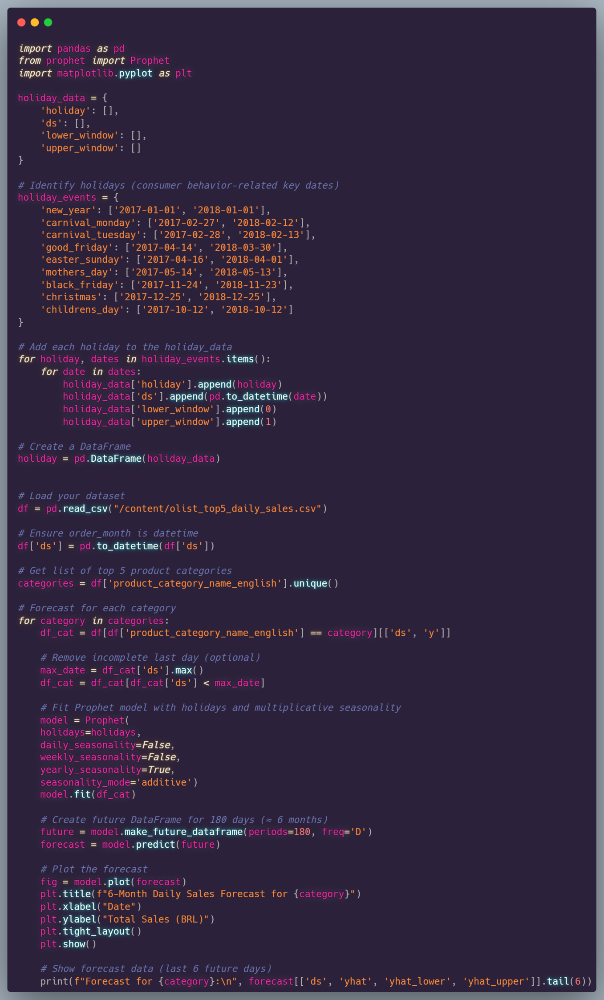

This project uses the Olist E-commerce dataset – a rich collection of real transactional data from a
Brazilian online marketplace. The dataset covers multiple dimensions of the business including customer
orders, product categories, seller locations, customer reviews, delivery timelines, payments, and
geolocation data.
Project Objective:
To derive actionable insights and develop predictive models to support strategic decision-making for
marketplace optimization.
The ultimate goal is to simulate the role of a data analyst or data scientist working for a large online retail platform—delivering clear, data-driven business insights and supporting operational and strategic planning.
This project utilizes the Olist Brazilian E-commerce Public Dataset, a real-world dataset collected from an online marketplace platform called Olist. The platform connects small and medium businesses to customers across Brazil.
Originally released on Kaggle, this dataset enables a wide range of analytics and machine learning applications related to order processing, customer satisfaction, logistics, and seller performance.
To enable rich analytics on customer experience, product performance, logistics, and geography,
we merged all 9 raw datasets into a unified DataFrame using pandas in Python.
This created a highly enriched dataset capturing information from product category to seller location.
order_id,
customer_id, and timestamps
customer_id to add
customer_city and customer_state
order_id to bring in
review_score and comments
lat/lng for city-state mapping
order_id to connect to
product_id and seller_id
product_id for category
and physical attributesproduct_category_name from Portuguese to English
seller_id to map seller locationFinal dataset size: after all merges and deduplication, the unified DataFrame contains several thousand enriched orders, each with details on location, products, sellers, reviews, and payments.
After merging the product dataset (olist_products_dataset.csv) with the translation file
(product_category_name_translation.csv),
we found that some Portuguese product categories did not have matching English translations.
These untranslated categories were grouped under the label “unknown” to preserve data
integrity and structure.
⚠️ Note: This implies that the translation file was incomplete. Any analysis involving product categories (e.g., segmentation or visualizations by category) should consider this "unknown" group carefully, as it may impact the accuracy of insights derived from the data.
This dashboard provides a high-level summary of Olist's e-commerce performance over a two-year period, from September 2016 to October 2018. It is designed to help stakeholders assess business growth, customer satisfaction, and delivery performance across multiple dimensions.
🔎 Applied Filters:
All visualizations across this Tableau Story are filtered to include only orders that meet the following
conditions:
These filters ensure that the analysis focuses solely on completed transactions with valid payment methods, providing a more accurate view of customer behavior and fulfillment metrics.
This dual-axis chart shows two important trends:
Sales volume and order count gradually increased throughout 2017 and remained strong into 2018, peaking around late 2017. This suggests significant platform growth and seasonality effects (e.g., end-of-year spikes).
This pie chart shows the proportion of customer review scores (1 to 5 stars) received after order delivery:
The dashboard includes interactive filters for:
These filters allow users to drill down into specific segments, enabling detailed performance analysis by product type, time period, or customer behavior.
🔗 Explore the interactive Story here: View Interactive Story
This dashboard presents a detailed view of customer satisfaction based on review scores. The data is filtered for delivered orders only. The goal is to evaluate how different product categories perform in terms of review scores, delivery times, number of orders, and sales volume.
On the left, we see the top 5 product categories with the highest customer satisfaction.
Notably, books_general_interest and books_imported received the highest volume of
reviews with high ratings.
On the right, we see the bottom 5 categories such as office_furniture and
fasion_male_clothing,
which received a large number of low-rated reviews. These insights can guide product quality improvement and
supplier evaluation.
The heatmap below shows the correlation between average review score and delivery duration. It is evident that as delivery time increases, the average review score tends to decrease, especially beyond the 15–20 day mark. This highlights the importance of efficient logistics and prompt delivery in maintaining customer satisfaction.
On the right, a summary table provides insights for each product category including:
fashion_childrens_clothes has a perfect 5.0 average review score and very short
delivery time (8.86 days),
while fashion_shoes shows relatively low satisfaction due to longer delivery
durations (15.28 days).
There is a clear link between delivery speed and customer satisfaction. Prioritizing faster delivery and enhancing logistics for lower-rated product categories could significantly improve overall user experience.
This dashboard displays the geographic distribution of both customers and sellers across Brazil, based on delivered orders. The visual comparison reveals patterns in consumer behavior and seller presence by state.
Each green circle on the left map represents the number of distinct customers per Brazilian state. The size of the circle reflects the customer count, while the intensity of the green color indicates the total payment value from that region.
The red map on the right shows the distribution of sellers. Similar to the customer map, the circle size represents the number of sellers while the red color intensity shows the total product price value sold from each state.
Both customer demand and seller supply are heavily concentrated in the southeastern states of Brazil. This insight is crucial for logistics planning, regional marketing, and inventory allocation strategies.
This dashboard provides a comprehensive overview of product category performance. It highlights key insights into sales, order volumes, pricing, and customer satisfaction through multiple visualizations.
The bar chart on the left shows the total sales revenue for the top product categories.
The chart in the center ranks categories by number of orders.
The table on the right compares total sales (in R$) against the average customer review score for each category.
The bottom treemap combines Portuguese and English category names, showing both price magnitude and review sentiment.
Health & Beauty and Bed, Bath & Table are high performers in both revenue and order count, while categories like Stationery and Garden Tools offer opportunities for growth due to strong customer feedback.
To understand customer purchasing behavior, we applied K-Means clustering using three features: total spending, number of orders, and review score. To determine the optimal number of clusters, we used two key metrics:
The plot above shows both metrics across k = 2 to 10. Based on the elbow point and silhouette peak, k = 6 was selected as optimal.
After selecting k = 6, we applied K-Means to create 6 customer groups. Each cluster represents a distinct customer segment with unique behavior in terms of spending, frequency, and satisfaction.
To visualize clusters in 2D space, we used Principal Component Analysis (PCA). Each point represents a customer, and the color indicates their assigned cluster.
This view helps to confirm clustering quality and provides insights for business actions such as targeted marketing or loyalty programs.
This table summarizes six customer segments based on customer behavior metrics like average spend, orders, and satisfaction. Tailored engagement strategies are suggested for each segment.
| Segment | # of Customers | Avg Spend (BRL) | Orders | Review | Segment Type | Strategy Highlights |
|---|---|---|---|---|---|---|
| 1 | 25,555 | R$182 | 1 | 3.7 | General buyer | Send repurchase promotions, upsell |
| 2 | 2,971 | R$423 | 2.1 | 4.11 | Loyal & high spender | Loyalty program, early access, review incentives |
| 3 | 53,173 | R$180 | 1 | 5 | Satisfied first-time buyer | Follow-up email, thank-you coupon |
| 4 | 13,541 | R$255 | 1 | 1.21 | Unhappy buyer | Apology survey, discount, investigate issues |
| 5 | 139 | R$9,241 | 1.16 | 3.1 | VIP with moderate satisfaction | Personalized service, direct feedback |
| 6 | 1 | R$109,312.64 | 1 | 1 | High-value dissatisfied outlier | Direct contact, investigate shipment, personalized recovery offer |
These segments support data-driven personalization, ensuring strategic alignment with customer satisfaction and value.
The following five business questions were carefully selected to reflect key areas where data can drive actionable insights and business value. Each question targets a distinct dimension of performance—ranging from product optimization and customer satisfaction to operational efficiency and strategic growth.
The goal is to demonstrate how data analytics can support evidence-based decision-making, reveal hidden opportunities, and address real-world challenges in a business context.
These questions not only highlight core metrics that matter to stakeholders but also showcase how thoughtful data exploration can lead to measurable improvements across departments.
Which states are underserved in terms of seller availability?
This question addresses
geographical gaps in marketplace access, focusing on areas with demand but limited or no seller presence.
This reveals a broader issue of inequity in seller access, especially in North and Northeast Brazil. These areas may benefit from:
How good are seller reviews in low-sales states compared to larger ones?
This question explores whether states with fewer sales are also performing poorly in terms of customer
satisfaction. Surprisingly, the data reveals the opposite trend.
Several low-sales states demonstrate exceptionally high review scores, often outperforming large markets. This suggests that seller performance in these regions is strong, but their visibility or access to customers might be limited.
| State | Market Size | Total Sales (BRL) | Avg Review Score | Orders |
|---|---|---|---|---|
| MS | Small | R$10,826 | ⭐ 4.56 | 49 |
| PA | Small | R$1,393 | ⭐ 4.50 | 8 |
| RN | Small | R$4,064 | ⭐ 4.47 | 22 |
| SE | Small | R$7,630 | ⭐ 4.46 | 40 |
| RR | Small | R$998 | ⭐ 4.38 | 6 |
| MA | Small | R$3,961 | ⭐ 4.33 | 28 |
These findings highlight a key business opportunity: regions like MS, PA, and RN have both high customer satisfaction and low sales. This may point to an underutilization of quality sellers due to factors such as poor infrastructure, lack of marketing, or limited delivery coverage.
Strategic Implication: Investing in logistics improvements, targeted marketing, and seller onboarding initiatives in these states could help unlock growth potential and improve regional equity in the platform’s seller ecosystem.
Which sellers generate the highest sales per single order?
The goal here is to identify sellers with the highest revenue per transaction, revealing opportunities for
maximizing revenue efficiency.
Top high-value sellers tend to operate in specialized or high-ticket product categories, such as Fixed Telephony, Garden Tools, and Computers. These sellers demonstrate the potential for significant revenue with just a few orders.
| Seller ID | Sales per Order (BRL) | Orders | Product Category |
|---|---|---|---|
| *2d5b2 | R$36,329.76 | 4 | Fixed Telephony |
| *ebbf5 | R$11,745.00 | 1 | Garden Tools |
| *84849 | R$10,259.61 | 3 | Drinks |
| *90f66 | R$7,719.12 | 2 | Auto |
| *4a1e2 | R$6,922.21 | 1 | Computers |
These sellers operate in categories that naturally have higher average basket values. Despite handling fewer orders, they achieve substantial revenue due to their product type.
Strategic Implication: Support these high-value sellers with targeted promotion, premium shipping options, and platform incentives to enhance visibility and drive conversions. This could help maximize revenue per transaction while improving customer experience in niche categories.
Do new customers rate differently from returning ones?
The data reveals an interesting contrast between new and returning
customers:
This highlights the need to invest in improving the first-purchase experience. By optimizing onboarding, product education, and post-sale support, we can increase satisfaction among new customers and boost their likelihood of becoming loyal repeat buyers.
Which product categories have the best reviews but low sales?
These products are loved by customers (avg. review score > 4.3), but generate
relatively low sales. Notably, categories like imported books and
construction tools stand out as examples.
| Product Category | Avg. Review | Total Sales (BRL) | # of Reviews |
|---|---|---|---|
| Books – General | ⭐ 4.44 | R$64,695 | 561 |
| Books – Imported | ⭐ 4.42 | R$6,702 | 62 |
| Construction Tools | ⭐ 4.42 | R$21,069 | 101 |
| Books – Technical | ⭐ 4.38 | R$24,993 | 269 |
| Food & Drink | ⭐ 4.32 | R$27,474 | 290 |
These high-rated yet underperforming categories represent “hidden gems” that could benefit from better promotion, improved visibility, or inclusion in targeted campaigns to unlock their full potential.
To anticipate future demand and guide strategic planning, we implemented a 6-month sales forecast using Facebook Prophet — a time series forecasting library developed by Meta. It is widely used in business analytics because of its ease of use, ability to handle holidays and trend changes, and suitability for daily data.
ds = date, y = daily total sales per category
weekly and yearly patterns'additive' to capture linear trendsds) was in datetime format.These forecasts enable better inventory planning, budget allocation, and marketing scheduling. By identifying expected highs and lows in demand per category, stakeholders can proactively optimize supply chains, promotions, and resource deployment.
This forecast analysis covers five major product categories and was designed to help stakeholders identify demand trends, seasonality, and sales volatility. Each forecast includes visual predictions with confidence intervals, paired with tailored marketing and operational suggestions to capitalize on business opportunities.
The sales forecast for the Bed Bath Table category reveals a recurring seasonal trend, with strong peaks around Q4—likely linked to major events like Black Friday and year-end holidays. While base demand remains steady, significant short-term increases are evident.
The Furniture Decor category shows stable demand with moderate fluctuations. No extreme peaks, but a slight growth trend suggests consistent consumer interest in home improvement products.
This category displays strong seasonal spikes, especially toward the end of the year. Demand patterns reflect major gifting holidays such as Christmas and New Year.
Sales in this category are stable with minor positive trends. No strong seasonal effects were observed, indicating a steady market.
This category shows cyclical behavior with demand surges likely related to back-to-school seasons and year-end promotions. Volatility suggests sensitivity to external events or promotions.
This end-to-end project explores Brazil’s largest online marketplace—Olist—by integrating data engineering, business analysis, and machine learning to extract valuable business insights and make data-driven recommendations.
🔍 Business Questions Answered:
Through a combination of visual storytelling, machine learning, and business-focused insights, this project demonstrates the potential of data-driven decision making in a competitive e-commerce landscape.